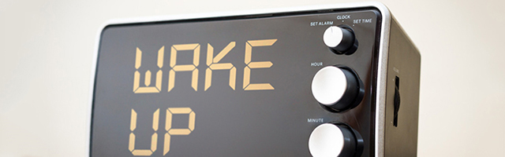

Stretch - Get your blood pumping
(Try locking your fingers with arms straight, pull them up and back as you lean back in a chair)
Do a quick exercise - 10 push-ups or jumping jacks can pump oxygen into your system and get your blood flowing. (check "Do this!" for ideas)
Eat! - Tasting something tart or strong can also wake you up, like sour candy, a lemon slice, or vinegar. Also, smelling coffee. (check the "Eat this!" list)
Chew on something - Your body will prepare for food intake by releasing insulin, which helps you stay alert. Try gum or ice cubes, the cold will also help.
Drink cold water - drinking lots of fluids can keep you hydrated so your body doesn't tire, and force you to keep getting up for the restroom!
Brush your teeth and wash your face - the cold water and minty tingle from toothpaste can stimulate your senses and wake you up
Talk to someone! - Having a conversation can perk your mind and wake you up. Explain a topic to a colleague, or excuse yourself to take a walk and make a call.
Stand up while you do work. - it eases back and neck strain, and encourages blood circulation
Escape - try to take a micronap by excusing yourself to the restroom, library, or nurse where you can sit unbothered for 10 minutes.
Ultimatum - If you are on the verge of collapse, go home sick. You may just need a day to recharge after weeks of sleep debt, and if you get the rest you need, youll be back on your feet in no time.
DO NOT: Try to stay awake to drive. Drowsy driving is as dangerous as drunk driving (one all-nighter is equivalent to a blood alcohol level of 0.1%, which is illegal)
Pull-over, take a nap, or ask someone to pick you up!

Long Term:
Shift the cycle: go to sleep a half hour earlier each night, and wake up half an hour earlier.
Don't hit snooze: Your sleep quality after hitting snooze repeatedly is worse than what you would get if you just slept a few minutes longer.
Get up at a fixed time every day: Go to bed only when you are sleepy, but wake up at the same time even if you didn‘t get enough sleep, this way you will become sleepy earlier the next night. This will help shift and regulate your sleep pattern.